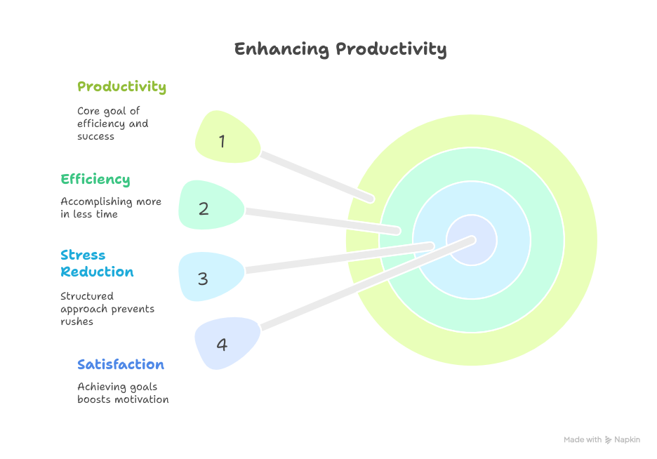

From Busy to Productive: A Practical Guide
The Importance of Productivity and Simple Strategies to Enhance It
In today’s fast-paced world, productivity is a key factor in achieving personal and professional success. However, many people struggle with distractions, procrastination, and burnout, making it difficult to maintain consistent efficiency. While there is no one-size-fits-all solution, adopting small yet effective habits can significantly improve productivity. This essay explores the importance of productivity and outlines five practical strategies to enhance it. Why Productivity Matters. Productivity is not just about working harder—it’s about working smarter. When managed well, it leads to:
Why Productivity Matters
Productivity is not just about working harder—it’s about working smarter. When managed well, it leads to:
- Higher efficiency – Accomplishing more in less time.
- Reduced stress – A structured approach prevents last-minute rushes.
- Greater satisfaction – Achieving goals boosts motivation and confidence.
Five Effective Productivity Strategies
- Prioritize Tasks
- Take Strategic Breaks
- Minimize Distractions
- Stay Hydrated and Energized
- Incorporate Movement
Not all tasks hold equal importance. Identifying and focusing on high-priority items ensures meaningful progress. Techniques like the Eisenhower Matrix (dividing tasks into urgent/important categories) can help in decision-making.
Continuous work leads to mental fatigue. Research supports the Pomodoro Technique—working for 25 minutes followed by a 5-minute break—as an effective way to maintain focus and prevent burnout.
Digital interruptions, such as social media notifications, disrupt concentration. Turning off non-essential alerts and creating a clutter-free workspace can enhance attention span.
Physical well-being directly impacts mental performance. Dehydration and poor nutrition reduce cognitive function, so drinking water and eating balanced meals are simple yet often overlooked productivity boosters.
Sedentary habits decrease energy levels. Short walks or stretching sessions improve blood circulation, refresh the mind, and enhance creativity.
Conclusion
Productivity is a skill that can be developed through mindful habits. By prioritizing tasks, managing energy, and reducing distractions, individuals can work more efficiently without sacrificing well-being. Implementing even one or two of these strategies can lead to noticeable improvements. Ultimately, productivity is not about doing more—it’s about doing what matters most effectively.